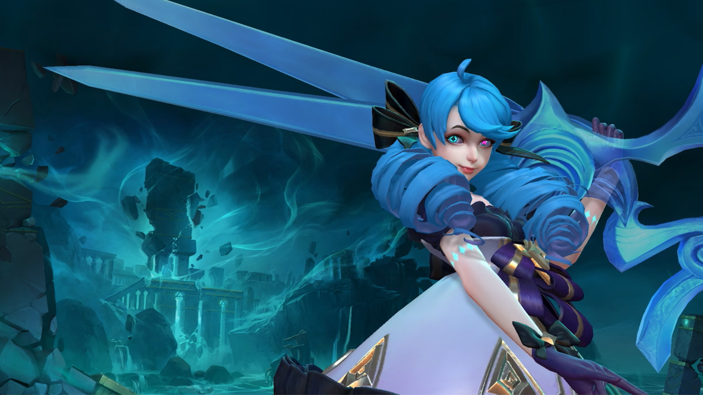
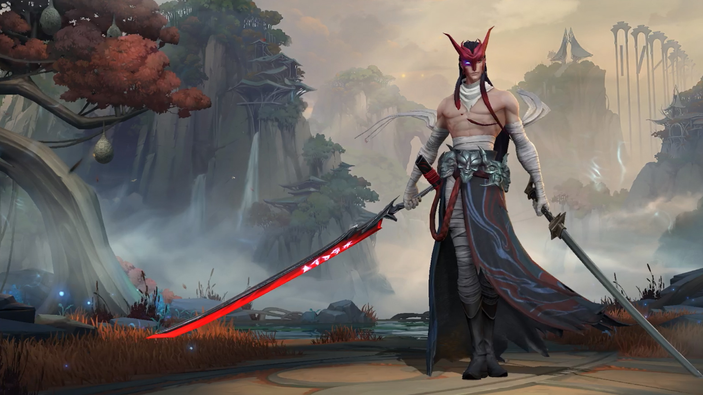
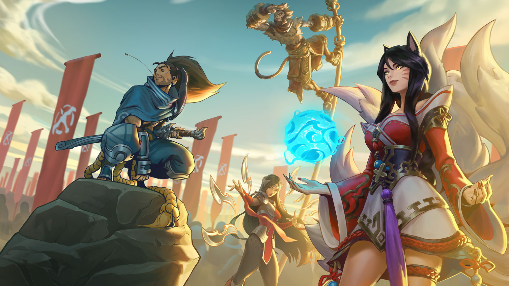
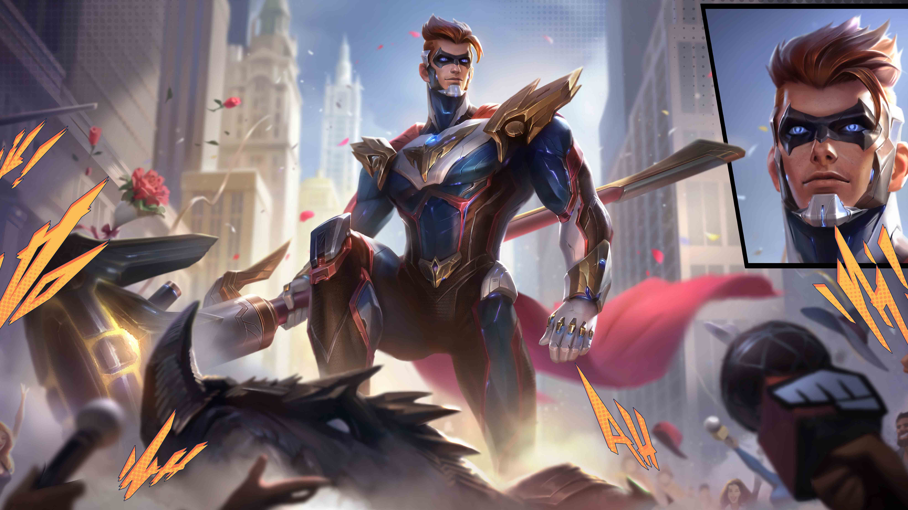
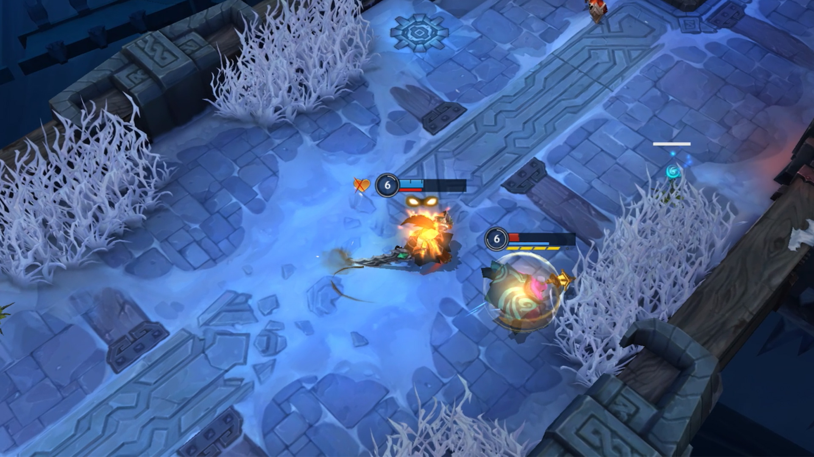
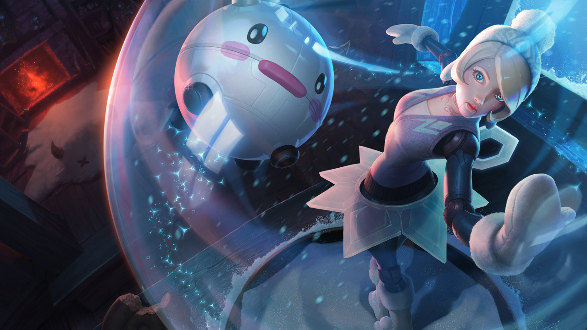
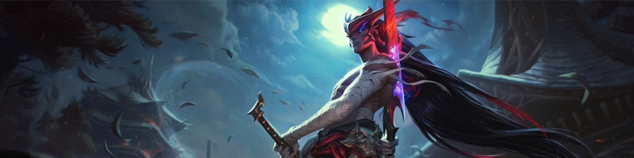

ОПИСАНИЕ ОБНОВЛЕНИЯ 3.4 ДЛЯ WILD RIFT
Точите лезвия: в Дикое ущелье прибывают Гвен и Ёнэ! От демонов и порождений черного тумана останутся одни лоскуты. Также в этом цикле появятся новый игровой режим, предметы, зачарования, пропуск Wild Rift и не только. Встречайте обновление 3.4!
Встречайте обновление 3.4! Встречайте обновление 3.4!
Точите лезвия: в Дикое ущелье прибывают Гвен и Ёнэ! От демонов и порождений черного тумана останутся одни лоскуты. Еще в игре появятся предметы с заданиями для поддержки. Они работают примерно так же, как в Лиге для ПК, но вместо дополнительных тотемов дают возможность чаще применять зачарования. Кстати о зачарованиях. Мы слегка изменили существующие и добавили несколько новых. Одно из них позволяет призвать с небес огромный метеорит, и лично мы считаем, что это очень круто. В дополнение к зачарованиям вас ждут новинки в системе предметов и изменения в основных сборках для магов. И, конечно же, ни одно обновление не обойдется без правок баланса (а в качестве бонуса мы даже слегка переработали умения всеми любимой кошки).
Мечтали когда-нибудь сразиться с оппонентом один на один, и чтобы вам при этом не мешали всякие лесники? Опробуйте новый режим "Дуэль", доступный в течение ограниченного времени в Воющей бездне! И не забудьте рассказать, что думаете об улучшениях, призванных сделать игровой процесс комфортнее.
Напоминаем: это лишь начало, и мы еще не достигли скачка силы в этом цикле. Но если вам не терпится узнать, что же будет дальше, смотрите видео-обзор обновления 3.4!
P.S. Новый начальный предмет поддержки Древний щит позволяет игрокам периодически добивать миньонов, при этом ближайший союзный чемпион тоже получает за это награду. Так что не обижайтесь на напарника по линии, он вовсе не пытается украсть ваш фарм!
Искренне ваш, игрок поддержки, который хочет помочь своему стрелку заработать побольше золота.
Напоминание: контент будет выходить на протяжении цикла обновления.
НОВОЕ
НОВЫЕ ЧЕМПИОНЫ
ГВЕН, БЛАГАЯ ШВЕЯ
Гвен – кукла, ожившая благодаря магии. Оружием ей служат швейные инструменты, с помощью которых когда-то смастерили ее саму. Она помнит, что всем обязана своей заботливой создательнице, и старается ценить каждую минуту жизни. Гвен управляет священным туманом, его древнее волшебство защищает и делает из ее ножниц, иголок и ниток оружие. Гвен еще многого не знает о жизни, но твердо намерена сражаться за то хорошее, что осталось в израненном мире.
Гвен появится в игре 15 сентября в 03:01 по московскому времени.
ЁНЭ, НЕЗАБЫТЫЙ
При жизни Ёнэ, сводный брат Ясуо, был одним из самых талантливых учеников в школе мечников, которая располагалась неподалеку от их родной деревни. Ёнэ погиб от рук собственного брата, а едва оказался в загробном мире – на него напала злобная сущность. У Ёнэ не оставалось иного выбора, кроме как убить монстра его собственным мечом. Обреченный носить на лице маску убитого демона, Ёнэ без устали охотится на других подобных тварей, чтобы понять, в кого превратился он сам.
Ёнэ появится в игре 22 сентября в 03:01 по московскому времени.
ОСОБЕННОСТИ
ОЧКИ ЧЕМПИОНА
В обновлении 3.4 мы вносим изменения в систему очков чемпиона. Сейчас вы можете повышать ранг мастерства только у конкретных чемпионов, но скоро у вас появится возможность получать очки еще и для каждой роли. Вот как все устроено.
- Всего будет 5 уровней мастерства.
- У каждого уровня – свой цветной значок.
- Эти уровни,
- а также три лучших чемпиона в каждой роли будут отображаться у вас профиле.
- Например, если вы коснетесь роли поддержки, то увидите трех чемпионов этой позиции, за которых вы заработали больше всего очков.
- Этой статистикой можно будет делиться с союзниками в лобби.
НОВОСТИ О ГИЛЬДИЯХ
Недавно мы выпустили статью, посвященную изменениям, которые коснутся гильдий и Состязаний, и хотим также упомянуть о них здесь. После 3-го сезона у Состязаний гильдий формат сменится на более простой. Четвертый сезон гильдий начнется 16 сентября в 03:01 по московскому времени. Вот что стоит от него ожидать:
- Мы заменяем Состязания, но сами гильдии никуда не денутся – вы по-прежнему сможете играть с товарищами.
- Шкала наград тоже остается, при этом набор призов пополнится интересными новинками.
- Сама шкала наград и задания для нее станут проще: теперь вы с друзьями сможете просто сыграть матч и получить за это награды.
- У шкалы наград и гильдий по-прежнему будут сезоны, каждый со своей темой.
-
Прежде чем закончатся Состязания гильдий, мы поблагодарим всех, кто участвовал в противостоянии и
присылал нам свои
отзывы.
- С 16 сентября по 1 октября вы и ваши товарищи по гильдии сможете получить еще одну награду.
- Если вы еще не состоите в гильдии, но вступите в нее до 1 октября, награда все равно будет вашей.
Обязательно скажите нам, что думаете про новый сезон и обновленную шкалу наград, и еще раз спасибо за участие!
Четвертый сезон гильдий начнется 16 сентября в 03:01 по московскому времени.
ПОЛЕЗНЫЕ ИЗМЕНЕНИЯ
В этом обновлении мы вносим несколько изменений, которые сделают игровой процесс комфортнее в целом.
Система сигналов
- Мы добавляем новую экспериментальную систему сигналов, призванную упростить их использование. Механика прицеливания в ней отличается от текущей, поэтому по умолчанию она отключена. Ждем ваших отзывов! Расскажите, что вы думаете.
- Сейчас во внутриигровых оповещениях об убийствах упоминается только чемпион, нанесший противнику последний удар, хотя зачастую решающую роль играет помощь союзников. Мы считаем, что они тоже заслуживают свою минуту славы, поэтому отныне в оповещении об убийстве будут отображаться иконки всех принимавших участие чемпионов. Подвиг вашего напарника по линии не останется без внимания!
- Система снаряжения также претерпела изменения. Во-первых, вам будет доступно больше ячеек для предметов при создании наборов. Во-вторых, вы сможете открыть созданный набор в игровом магазине, посмотреть, в каком порядке там идут предметы, и поменять их местами в зависимости от состава вражеской команды или чемпиона, которому вы противостоите на линии. Надеемся, что новая система побудит игроков чаще включать в наборы снаряжения ситуативные предметы, поскольку они будут под рукой.
ПРОПУСК WILD RIFT
Что это там в небе? Птица? Самолет? Нет, Супергерой Джейс! Днем Джейс – гениальный изобретатель, а ночью – герой, который всегда приходит на помощь тем, кто в этом нуждается. Он влетит в Дикое ущелье вместе с новым пропуском Wild Rift, благодаря которому вы также сможете получить Вознесшуюся версию этого образа и несколько аксессуаров.
Обратите внимание, что в обновлении 3.4 слегка изменится процесс получения наград пропуска.
- Раздел "Дополнительные награды" преобразован в храм пропуска Wild Rift.
- Теперь призы, выдаваемые с 51 по 75 уровень пропуска, можно забирать в каком угодно порядке.
- Забрав достаточно наград в храме, вы сможете получить улучшение для образа пропуска.
-
Игроки смогут выполнять простые повторяемые задания, участвуя в матчах.
- Их количество ограничено, но они будут обновляться каждую неделю.
- Элитный пропуск откроет доступ к сезонным заданиям, с которыми вы точно успеете получить все желаемые награды в храме.
-
Также владельцы элитного пропуска получат новый сундук со случайным образом на 1-м уровне.
- При этом вы сможете выбрать, для чемпиона какой позиции хотите образ: одиночная, средняя или парная линия, поддержка или лес.
Обновленный пропуск Wild Rift появится в игре 15 сентября в 03:01 по московскому времени.
ИГРОВЫЕ РЕЖИМЫ
ДУЭЛЬ
Пора помериться силами! В течение ограниченного времени вам будут доступны эпические бои один на один в Воющей бездне. Покажите оппоненту, как круто играете за Зеда или Вейн, когда вам не мешают всякие надоедливые лесники. Конечно, как и в любом другом режиме, здесь есть определенные правила.
-
Чтобы победить, нужно выполнить любое из следующих условий.
- Убить вражеского чемпиона 2 раза до появления сужающегося круга.
- Убить вражеского чемпиона 1 раз после появления сужающегося круга.
- Уничтожить первую башню.
-
Во время матча появляется сужающийся круг.
- Он возникает спустя 8 минут после начала игры.
- начале круг охватывает всю карту. Через 30 секунд он начинает сужаться.
- Круг перестает сужаться спустя 9 минут 30 секунд после начала игры, и его окончательный радиус составляет 5 метров.
- Находясь за пределами круга, вы каждую секунду получаете урон.
- После появления круга побеждает тот, кому удалось первым убить вражеского чемпиона.
- В режиме "Дуэль" разблокированы все чемпионы.
- Эффективность всестороннего вытягивания жизни против миньонов составляет 50%.
- Вы можете вернуться к фонтану, чтобы купить предметы.
- В начале матча оба игрока получают по 500 золота.
- Пассивный приток золота и опыта увеличен.
Режим "Дуэль" будет доступен с 16 сентября, 03:01 по московскому времени, по 30 сентября, 02:59 по московскому времени.
ИЗМЕНЕНИЯ ARAM
В этом обновлении мы внесем изменения в ARAM на стадии выбора чемпиона. Вы сможете покупать дополнительные очки перевыбора за энергию поро. Вот как это работает.
- Использовать очки перевыбора можно только на экране выбора чемпиона.
- У вас может быть до двух бесплатных очков перевыбора, и восстанавливаются они с той же скоростью.
- Если вы используете все бесплатные очки перевыбора, у вас появится возможность купить дополнительные за энергию поро.
-
Вы не можете использовать более 2 очков за матч. Сначала используются
бесплатные, затем –
дополнительные.
- Другими словами, если при входе в лобби у вас уже было 2 бесплатных очка перевыбора, вы не сможете купить дополнительные.
- Всего можно купить до 3 дополнительных очков перевыбора в день.
- В первый раз вам нужно будет заплатить 50 ед. энергии поро, во второй – 100 ед. энергии поро, а в третий – 200 ед. энергии поро.
- Дополнительные очки перевыбора нельзя накапливать.
- Работают они так же, как бесплатные: позволяют союзникам выбрать чемпионов, отправленных на скамейку запасных.
Также на основе ваших отзывов мы переименовали титулы ARAM, появившиеся в обновлении 3.3:
- Воин ARAM
- Вестник ARAM
- Герой ARAM
- Король ARAM
- Легенда ARAM
СОБЫТИЯ
ПОЯВЛЕНИЕ ЁНЭ
Ёнэ, сводный брат Ясуо, прибывает в Ущелье. Он без устали охотится на демонов, чтобы понять, в кого превратился сам.
Событие "Появление Ёнэ" начнется 22 сентября в 03:01 по московскому времени.
CHAMPION CHANGES
АКАЛИ
Сейчас за Акали трудно побеждать даже опытным игрокам, освоившим все ее механики, не говоря уже о тех, кто только изучает этого чемпиона. Надеемся, эти усиления помогут Вольной убийце эффективнее расправляться с врагами.
ОСНОВНЫЕ ПОКАЗАТЕЛИ
- Базовый запас здоровья: 570 → 600.
ПОКРОВ СУМЕРЕК
- Восстановление энергии: 80 → 100.
- Максимальное восстановление энергии: 80 → 100.
ДЖЕЙС
Чтобы научиться грамотно использовать стойку Джейса с молотом, требуется время, поэтому мы немного усиливаем стойку с пушкой, на которую в основном полагаются новички. Теперь освоить тонкости игры за Джейса в ближнем бою станет чуточку проще.
ОСНОВНЫЕ ПОКАЗАТЕЛИ
- Восстановление маны: 9 → 12.
ГРОХОЧУЩИЙ УДАР / ВРАТА УСКОРЕНИЯ
- Время перезарядки: 16 секунд → 100.
ДЖИН
Мы хотим, чтобы у Джина было больше возможностей повлиять на ход игры. Предыдущее усиление, увеличивающее продолжительность обездвиживания, которое накладывает Смертельное действо, не сильно помогло ему в этом плане, поэтому мы откатываем изменение и взамен сокращаем время произнесения.
СМЕРТЕЛЬНОЕ ДЕЙСТВО
- Время произнесения: 11 кадров → 100.
- Продолжительность обездвиживания: 1,5/1,75/2/2,25 секунды → 1,25/1,5/1,75/2 секунды..
ЛЕОНА
Несмотря не недавние усиления, Леона все еще уступает остальным чемпионам поддержки на линии дракона. Чтобы она чаще сияла в командных сражениях, мы увеличиваем продолжительность эффектов контроля ее абсолютного умения – Солнечной вспышки.
СОЛНЕЧНАЯ ВСПЫШКА
- Продолжительность замедления и оглушения: 1,5 секунды → 1,75 секунды..